Mit dem Programm "Produktionsliste", welches über den Menüpunkt
1 WinLine PPS
1 Produktion
1 Produktionsliste
aufgerufen wird, kann eine Produktionsinformationsliste über die offenen und / oder abgeschlossenen Produktionsaufträge mit diversen Auftragsinformationen ausgegeben werden.
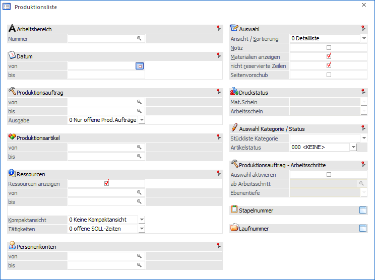
Die Ausgabe kann durch folgende Kriterien eingeschränkt bzw. beeinflusst werden:
Selektion
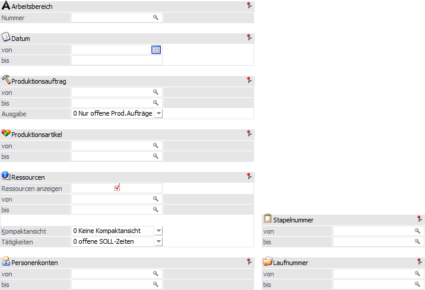
Ø Arbeitsbereich
An dieser Stelle kann die Auswahl des Arbeitsbereichs erfolgen. Mit Hilfe von Arbeitsbereichen können diverse Einschränkungen, wie z.B. der Produktionsartikel oder der Stapelnummer, bereits vorbelegt werden.
Ø Datum von / bis
An dieser Stelle kann auf das Produktionsdatum der einzelnen Arbeitsschritte eingegrenzt werden. Es werden nachfolgend nur Informationen zu den Arbeitsschritten ausgegeben, in deren Zeitraum dieses Datum liegt.
Ø Produktionsauftrag von / bis
An dieser Stelle kann eine Einschränkung auf die Produktionsaufträge erfolgen, welche in der weiteren Folge ausgewertet werden sollen.
Ø Ausgabe
Mit Hilfe dieser Auswahlliste kann definiert werden, welche Art von Produktionsaufträgen ausgegeben werden sollen. Folgenden Auswahlmöglichkeiten stehen hierfür zur Verfügung:
ü 0 - Nur offene Prod.Aufträge
Es
werden nur die noch nicht abgeschlossenen Produktionsaufträge ausgegeben.
Hinweis
Wenn innerhalb eines Produktionsauftrags bereits ein oder mehrere Arbeitsschritte abgeschlossen wurden, dann werden diese Arbeitsschritte nicht mit angezeigt.
ü 1 - inkl. erledigter
Prod.Aufträge
Es werden alle Produktionsaufträge (abgeschlossene und offene)
ausgegeben.
ü 2 - NUR erledigte
Prod.Aufträge
Es werden nur die bereits abgeschlossenen Produktionsaufträge
ausgegeben.
Hinweis
Wenn innerhalb eines Auftrags bereits ein oder mehrere Arbeitsschritte abgeschlossen wurden, dann werden diese Arbeitsschritte auch mit angezeigt.
ü 3 - Simulationen
Es werden nur
die Simulationsaufträge ausgegeben.
Ø Produktionsartikel von / bis
Mit Hilfe dieser Eingabefelder kann eine Selektion auf die Produktionsartikel erfolgen, welche in der Auswertung berücksichtigt werden sollen. D.h. es werden nachfolgend nur Informationen zu den Arbeitsschritten ausgegeben, in welchen diese Artikel produziert werden.
Hinweis
Wird im Feld "Produktionsartikel von / bis" nur eine Artikelnummer eingegeben und dieser Artikel hat auch noch Ausprägungen, so werden alle Ausprägungen automatisch mit angedruckt. Nur wenn während des Anklickens des entsprechenden "Ausgabe"-Buttons die STRG-Taste gedrückt wird, wird nur der Hauptartikel alleine ausgewertet.
Ø Ressourcen anzeigen
Wenn diese Option aktiviert wird, dann werden die zu einer Tätigkeit eingeplanten Ressourcen mit ausgewiesen.
Ø Ressource von / bis
Wenn die Option "Ressourcen anzeigen" aktiviert wurde, dann ist an dieser Stelle eine Eingrenzung auf die auszugebenden Ressourcen möglich.
Achtung
Die Eingrenzung auf bestimmte Ressourcen beeinflusst nicht, welche Produktionsaufträge in der Liste ausgegeben werden.
Ø Kompaktansicht
Die folgenden Auswahlmöglichkeiten stehen an dieser Stelle zur Verfügung:
ü 0 - Keine Kompaktansicht
Es
wird jede der eingeplanten Ressourcen bzw. Ressourcengruppen einzeln
ausgewiesen.
Beispiel
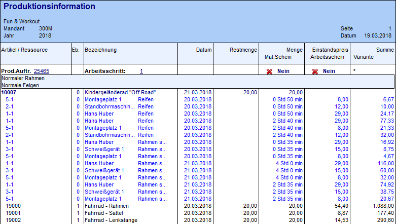
ü 1 - unterschiedliche
Zeiten
Es wird jede eingeplante Tätigkeit ausgewiesen. Wenn eine Tätigkeit
dabei mehrfach eingeplant wurde (hier "Reifen" und "Rahmen schweißen"), dann
wird pro Startzeit eine Zeile ausgegeben.
Beispiel
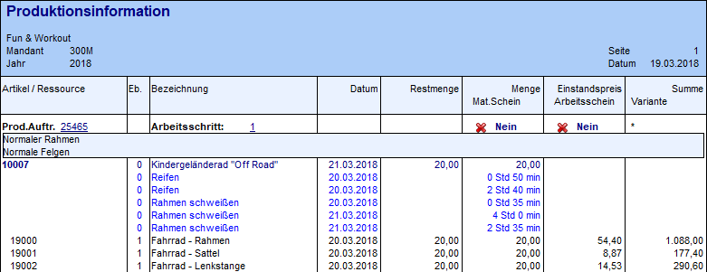
ü 2 - unterschiedliche
Tätigkeiten
Es wird jede eingeplante Tätigkeit ausgewiesen, allerdings nur
eine Zeile. Diese wird mit der Startzeit (wann die Tätigkeit gestartet wird) und
der Endzeit (wann diese Tätigkeit komplett beendet wird) angezeigt.
Beispiel
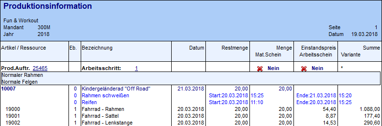
Ø Tätigkeiten
Mit den Selektionen in diesem Feld können verschiedene Arten von SOLL- bzw. IST-Zeiten in Bezug auf die Ressourcenbelegung in der Auswertung angedruckt werden:
ü 0 - offene SOLL-Zeiten
ü 1 - SOLL-Zeiten (Planungszeiten)
ü 2 - SOLL-Zeiten (Planungszeiten) und endgemeldete IST-Zeiten
ü 3 - endgemeldete IST-Zeiten
ü 4 - erfasste IST-Zeiten (noch nicht endgemeldet)
ü 5 - offene SOLL-Zeiten und alle IST-Zeiten
Ø Personenkonten von / bis
An dieser Stelle kann eine Einschränkung auf die Personenkonten erfolgen, für welche die Produktionsaufträge durchgeführt werden sollen. Dieses ist allerdings nur dann sinnvoll, wenn die Produktionsaufträge aus der WinLine FAKT übergeben wurden, bzw. wenn beim Produktionsauftrag manuell ein Personenkonto hinterlegt wurde.
Ø Stapelnummer von / bis
An dieser Stelle kann eine Einschränkung mit Hilfe der Stapelnummern erfolgen.
Ø Laufnummer von / bis
Hier kann die Ausgabe über eine Selektion auf die Laufnummer (Beleg aus der WinLine FAKT) erfolgen. Dieses ist allerdings nur dann sinnvoll, wenn die Produktionsaufträge aus der WinLine FAKT übergeben wurden, bzw. wenn beim Produktionsauftrag manuell eine Laufnummer hinterlegt wurde.
Auswahl
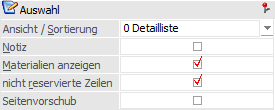
Ø Ansicht / Sortierung
An dieser Stelle kann die Ansicht bzw. Sortierung der Liste definiert werden. Folgende Varianten stehen zur Auswahl:
ü 0 - Detailliste
Es wird eine
Liste aller zuvor selektierten Produktionsaufträge ausgegeben.
ü 1 - Arbeitsschritten
Innerhalb
jedes selektierten Produktionsauftrags wird nach Arbeitsschritten sortiert, d.h.
erst nach der Auflistung der Komponenten des Arbeitsschritts 1 folgt die Ausgabe
von Arbeitsschritt 2 und der weiteren Arbeitsschritte.
ü 2 - Datum
Die Liste der zuvor
selektierten Produktionsaufträge wird gemäß des Produktionsdatums der einzelnen
Arbeitsschritte sortiert und ausgegeben.
ü 3 - Artikel
Die Liste nach den
Produktionsartikeln (Halbfertig- und Fertigprodukte) sortiert ausgegeben.
ü 4 - Stapelnummer
Die Liste wird
nach den Stapelnummern sortiert ausgegeben.
Ø Notiz
Durch die Aktivierung dieser Option werden die Notizen, welche bei den einzelnen Produktionsartikeln (Halbfertig- und Fertigprodukte) hinterlegt wurden (manuell oder automatisch), ebenfalls ausgegeben.
Hinweis
Die Notiz des Fertigprodukts wird bei der Anlage eines Produktionsauftrags automatisch mit dem Notiz-Text der Stückliste gefüllt. Eine nachträgliche Änderung kann z.B. im Programm Arbeitsschrittstatus vorgenommen werden.
Die Notiz der Halbfertigprodukte wird auch automatisch bei der Auftragsanlage befüllt. Hier stammt der Notiztext aus der Spalte "Text" der Komponententabelle des Stücklistenstamms. Eine Änderung des Texts kann z.B. über das Programm Produktionskorrektur erfolgen.
Ø Materialen anzeigen
Durch die Aktivierung dieser Option werden die für den jeweiligen Arbeitsschritt benötigten Komponenten (Materialien) ebenfalls ausgegeben.
Ø nicht reservierte Zeilen
Wenn diese Option aktiviert wird, dann werden auch die nicht reservierten Tätigkeiten eines Produktionsauftrags ausgewiesen.
Ø Seitenvorschub
Wenn diese Option aktiviert wird, so wird ein Seitenvorschub nach jedem Produktionsauftrag im Ausdruck eingeleitet. Die Option kann nur mit der "Ansicht / Sortierung" des Typs "0 - Detailliste" bzw. "1 - Arbeitsschritten" verwendet werden.
Druckstatus
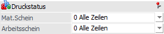
Die nachfolgenden Optionen können nur aktiviert werden, wenn die "Ansicht / Sortierung" gemäß "1 - Arbeitsschritte" erfolgen soll.
Ø Materialentnahmeschein
Mit den folgenden Optionen können Projekte nach dem Druckstatus des Materialentnahmescheines selektiert werden:
ü 0 Alle
Zeilen
Produktionsaufträge werden unabhängig vom Druckstatus des
Materialentnahmescheins ausgegeben.
ü 1 muss gedruckt sein
Nur jene
Produktionsaufträge werden ausgegeben, für die ein Materialentnahmeschein
gedruckt wurde.
ü 2 darf nicht gedruckt sein
Nur jene Produktionsaufträge werden ausgegeben, für die noch kein Materialentnahmeschein gedruckt wurde.
Hinweis
Wenn innerhalb eines Auftrags nur für bestimmte Arbeitsschritte ein Materialentnahmeschein erstellt wurde, dann werden auch nur diese Arbeitsschritte ausgewiesen.
Ø Arbeitsschein
Mit den folgenden Optionen können Projekte nach dem Druckstatus des Arbeitsscheines selektiert werden:
ü 0 Alle
Zeilen
Produktionsaufträge werden unabhängig vom Druckstatus des
Arbeitsscheins ausgegeben.
ü 1 muss gedruckt sein
Nur jene
Produktionsaufträge werden ausgegeben, für die ein Arbeitsschein gedruckt
wurde.
ü 2 darf nicht gedruckt sein
Nur jene Produktionsaufträge werden ausgegeben, für die noch kein Arbeitsschein gedruckt wurde.
Hinweis
Wenn innerhalb eines Auftrags nur für bestimmte Arbeitsschritte ein Arbeitsschein erstellt wurde, dann werden auch nur diese Arbeitsschritte ausgewiesen.
Auswahl Kategorie / Status
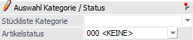
Ø Stückliste Kategorie
Hier kann eine (oder mehrere) Stücklisten Kategorie(n) ausgewählt werden, wodurch in der Folge nur Stücklistenteile bzw. Tätigkeiten in der Ausgabe berücksichtigt werden, bei welchen in der Stückliste die entsprechende(n) Kategorie(n) hinterlegt wurden.
Ø Artikelstatus
Hier kann ein Artikelstatus ausgewählt werden, wodurch in der Folge nur Stücklistenteile in der Ausgabe berücksichtigt werden, bei welchen der entsprechenden Artikelstatus vorhanden ist.
Produktionsauftrag - Arbeitsschritte
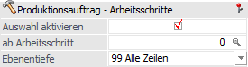
Ø Auswahl aktivieren
Durch die Aktivierung dieser Option können die nachfolgenden Felder ("ab Arbeitsschritt" und "Ebenentiefe") genutzt werden.
Ø ab Arbeitsschritt
Wenn an dieser Stelle auf einen bestimmten Arbeitsschritt eingeschränkt wird, dann erfolgt nur eine Ausweisung des selektierten Arbeitsschritts und aller darunterliegenden Arbeitsschritte.
Hinweis
Bei dieser Option ist es nur sinnvoll einen einzelnen Produktionsauftrag auszuwerten. Aus diesem Grund sollte im Feld "Produktionsauftrag von / bis" die Eingrenzung auf einen bestimmten Auftrag erfolgen.
Sollte auf mehrere Produktionsaufträge eingegrenzt werden, dann wird eine entsprechende Meldung ausgegeben.
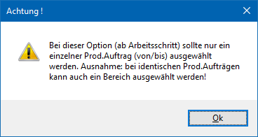
Ø Ebenentiefe
An dieser Stelle kann ausgewählt werden, wie "tief" die Auswertung durchgeführt werden soll. D.h. bei Ebenentiefe "01 - Ebene" wird nur der eigentliche Produktionsartikel ggfs. mit den entsprechenden Materialien ausgewertet.
Hinweis
Bei Stücklistenkomponenten bzw. -teilen, die Ausprägungsartikel sind, wird das Icon in der Auswertung angedruckt, das bei der jeweiligen Ausprägung im Fenster "Ausprägung verwalten" hinterlegt ist, z.B. um ein Fremdfertigerlager zu kennzeichnen.
Buttons
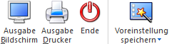
Ø Ausgabe Bildschirm
Mit Hilfe des Buttons "Ausgabe Bildschirm" oder der Taste F5 wird die Auswertung am Bildschirm ausgegeben.
Ø Ausgabe Drucker
Durch Anwahl des Buttons "Ausgabe Drucker" wird die Auswertung am Drucker ausgegeben.
Ø Voreinstellung speichern
Durch Anwahl dieses Buttons erfolgt eine benutzerspezifische Speicherung aller im Fenster getätigten Einstellungen. Diese sogenannten "Voreinstellungen" können jederzeit wieder abgerufen werden und ermöglichen dadurch ein schnelleres und zielorientierteres Arbeiten (nähere Informationen entnehmen Sie bitte dem Kapitel "Die Voreinstellungen").
Achtung
Wird die Produktionsliste über eine WinLine Funktion aufgerufen (z.B. via Leitstand), so wird eine ggfs. gespeicherte Standardvoreinstellung nicht berücksichtigt.
Hinweise - Auswertung
In der Produktionsliste wird bei den einzelnen Stücklistenkomponenten standardmäßig der Einstandspreis ausgewiesen. Wenn stattdessen der Bewertungspreis herangezogen werden soll, dann stehen dafür im Formular die folgenden Variablen zur Verfügung:
ü 0/0249 - Bewertungspreis
ü 0/0250 - Menge * Bewertungspreis
ü 0/0251 - Summe Bewertungspreis
Zusätzlich werden Ressourcen, die gleichzeitig mehrere Tätigkeiten durchführen bzw. durchführen können (d.h. die Option "Teilverplanung" ist für die Ressource im Tätigkeitenstamm aktiviert) mit dem Symbol gekennzeichnet.
Sollte das Datum bei / für Arbeitsschritte(n) manuell editieren worden sein (Programm "Leitstand", Bereich "Arbeitsschritte"), so wird mit dem Symbol darauf hingewiesen.